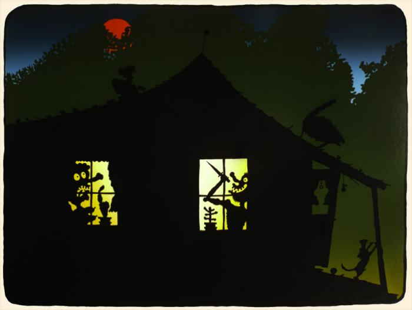
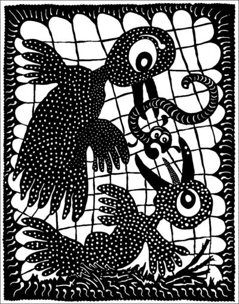
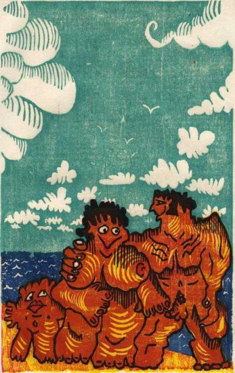
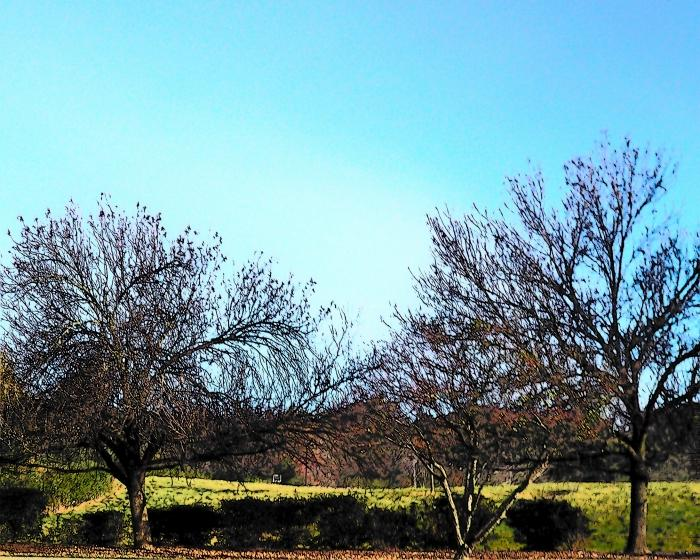
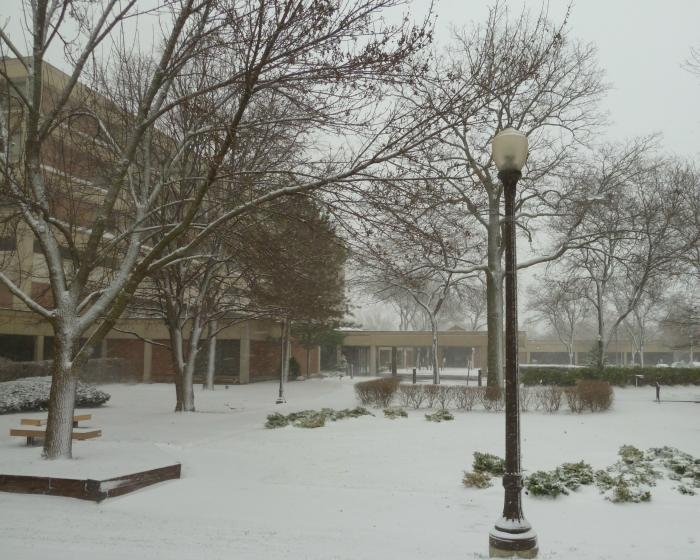

THE SHIT CREEK REVIEW
ISSUE 14 - GOD(S)
These were accepted for use in “a future issue” and I haven’t managed to match them up with poems, so here they are on their own. —Rose





« Prev | Table of Contents | Next »
All content © 2011 credited authors and artists “Storm Clouds” courtesy of Free-Screensavers-Backgrounds.com - Site powered by WordPress